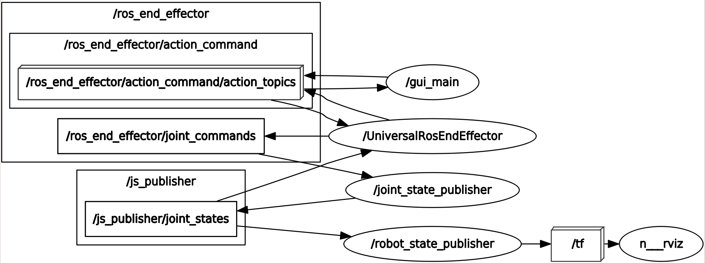
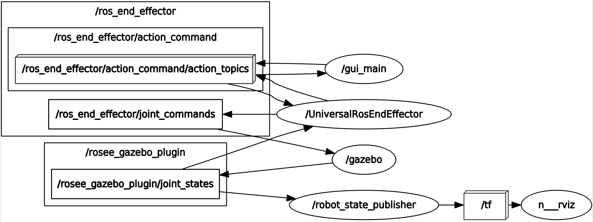

ROS Topics Structures
This section is an aid to discricate among the ros topics involved in the framework.
You can visualize the topics as in the following images at any time during while the framework is running, using
the ROS tool rqt_graph.
As reminder, in rqt_graph the ovals are the ROS nodes, the inner rectangles are the topics, the outer ones
are the namespaces (which the inner topics belong), and the parallelepipeds are for ROS action (that are a sort of collections of topics). The arrows indicate ROS publications and subscriptions.
Kinematic Simulation Only
{kind=link}
gui_main is the ROS End-Effector GUI node, which sends commands. The GUI can be substitutes with publishers and subscribers as briefly explained in Control your End-Effector with ROSEE (online phase) section.
The GUI publish actions to /ros_end_effector/action_command/action_topics and receives feedbacks from the same actionUniversalRosEndEffector receive commands from /ros_end_effector/action_command/action_topics, interpret them, and, if they are correct, send the joint position reference (for only actuated joints) to /ros_end_effector/joint_commands
joint_state_publisher is a standard ROS node to “convert” joint_commands into joint_states. The difference is that joint_commands contain only positions for the actuated joints, while for the simulation we want also that the mimic joints move accordingly. This node is obviously only necessary when simulating.
robot_state_publisher simply “convert” joint_states into /tf, necessary for rviz visualization
Dynamic simulation (with gazebo)
{kind=link}
With the dynamic simulations the graph is similar. The only difference is that, instead of the joint_state_publisher, there is the gazebo node. Inside this node, it is present the rosee_gazebo_plugins (which is not a standalone node because it is only a “plugin” for gazebo node). The plugin’s job includes to consider the mimic joints, similarly to what the joint_state_publisher did before.
The /joint_states topic has now a different namespace (i.e. /rosee_gazebo_plugins) to remember us that we are using gazebo, but its messages are of the same type as before (i.e. js_publisher).